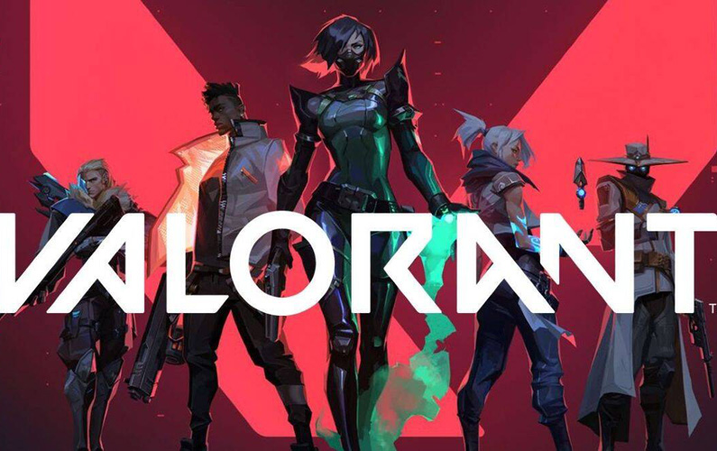
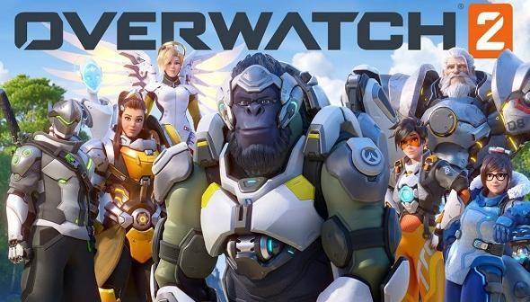
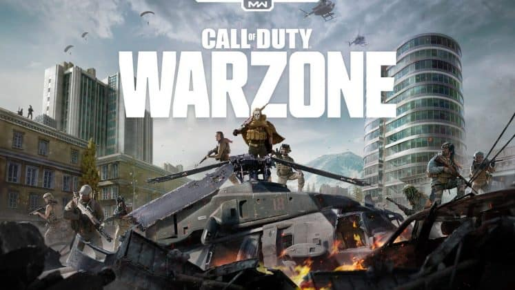
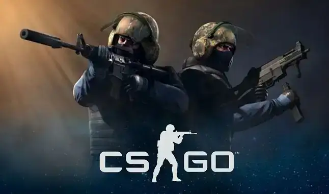

Idag finns det otroligt många olika spel man kan välja bland och nya spel kommer för varje dag som går. Spel finns bland i princip alla tekniker vi använder oss idag, PC, TV, mobiltelefoner, plattor och till och med casinon.
Jag själv spelar idag mest på PC och bland alla tusentals av dessa spel har jag några av mina favoriter som jag kommer att ta upp här nedanför och även varför dem är topp 5 för just mig. Jag började spela redan när jag var 8 år och har sedan dess testat flera olika spel, vissa spelar jag än idag och Counter Strike är t.ex. ett utav spelen. Nedan för kommer jag att lista anledningen till att dessa spel fortfarande spelas av mig idag. Självfallet finns det otroligt mycket spel jag fortfarande inte har spelat och jag ser fram emot dem spel jag kommer stöta på i framtiden!
För att veta ytterliggare info kring spelen, tryck på bildena!
Valorant, skrivet som VALORANT, är ett kostnadsfritt datorspel i förstapersonsperspektiv som är utvecklat av och distribuerat av Riot Games. Spelet släpptes i en stängd beta-fas den 7 april 2020 och släpptes officiellt den 2 juni 2020. Valorant är ett lagbaserat förstapersonsperspektiv spel som utspelas i en nära framtid. Spelaren spelar som en av flera agenter, karaktärer som är designade utifrån olika kulturer runt om i världen. I spelets huvudsakliga spelläge tillhör spelaren ett av två olika lag. Ett lag som ska attackera och ett som ska försvara och varje lag har 5 spelare.
Overwatch är ett lagbaserat taktiskt flerspelarspel i genren förstapersonsskjutare utvecklat och utgivet av Blizzard Entertainment. Det släpptes den 24 maj 2016 till Microsoft Windows, Playstation 4 och Xbox One. 15 oktober 2019 släpptes spelet till Nintendo Switch. I Overwatch fördelas spelarna på två lag om sex personer i varje match[5]. Under varje match väljer spelarna någon av de 31 fördefinierade hjältekaraktärerna med unika rörelser, attribut och färdigheter som finns i spelet. Dessa hjältar är indelade i tre klasser: Damage, Support och Tank.
The Sims är en serie datorspel med livssimulatortema som började med spelet The Sims år 2000. Uppföljare är bland annat The Urbz, The Sims 2, The Sims 3 och The Sims 4. Spelserien har sålts i nästan 200 miljoner exemplar internationellt. The Sims var det första spelet i spelserien och släpptes 2000. Alla spel i "The Sims"-serien är baserade på att skapa och ta hand om en familj. Man kan välja att arbeta som många olika saker. I första spelet i serien åldrades inte de man hade i sitt så kallade hushåll, som man under spelets gång både styr och i de flesta fall skapar. "Simmar", som personerna kallas (gäller även husdjur) åldrades för första gången i The Sims 2.
Call of Duty är ett datorspel i förstapersonsperspektiv som är utvecklat av Infinity Ward och distribuerat av Activision. Spelet utspelar sig under andra världskriget och är det första i Call of Duty-serien. Man spelar som amerikan, britt och ryss, där det slutliga målet är detsamma – att inta Berlin och störta nazistregimen. Det finns två olika lägen, enspelarläge där man ska utföra olika uppdrag ensam, och flerspelarläge där man spelar mot andra spelare. Spelet släpptes 2009 till Playstation 3 och Xbox 360 som nedladdningsbar med titeln
Counter-Strike (förkortat CS) är ett datorspel ursprungligen utvecklat som en modifikation till datorspelet Half-Life. Senare gjordes spelet till ett självständigt datorspel av Valve Corporation med Sierra On-Line som utgivare. Spelet är en förstapersonsskjutare som spelas över nätverk med fysiska motståndare, ett flerspelarspel. Counter-Strike har sedan det släpptes 1999 varit mycket populärt och hade 2010 sålt över nio miljoner exemplar. Inom e-sport var Counter-Strike ett av de största spelen och spelades på professionell nivå fram till 2013. Flera uppföljare har gjorts däribland Counter-Strike: Condition Zero (2004), Counter-Strike: Source (2004) och Counter-Strike: Global Offensive (2012).
